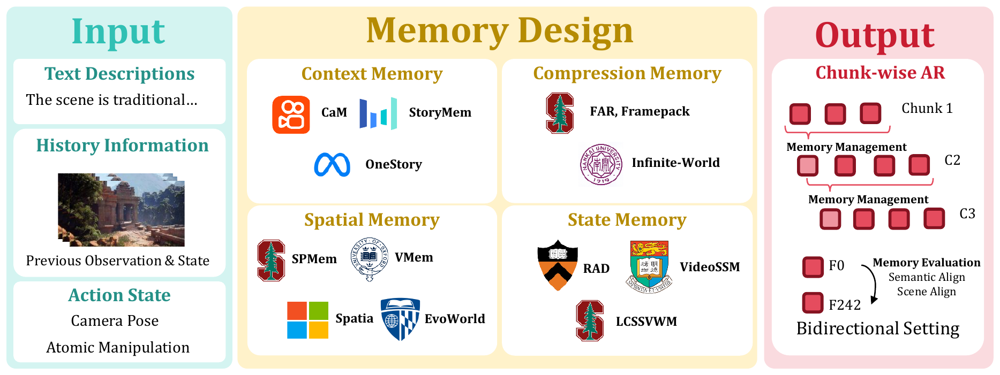
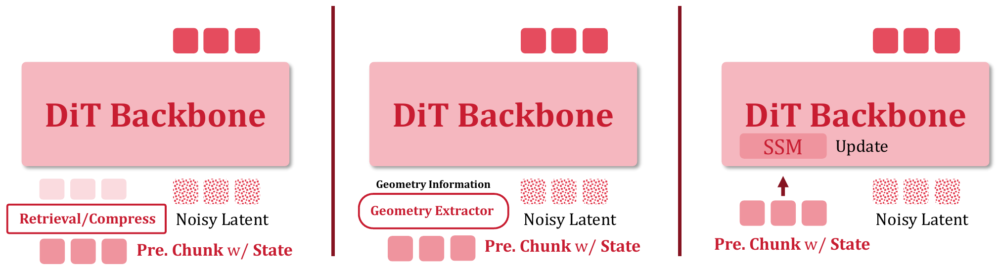
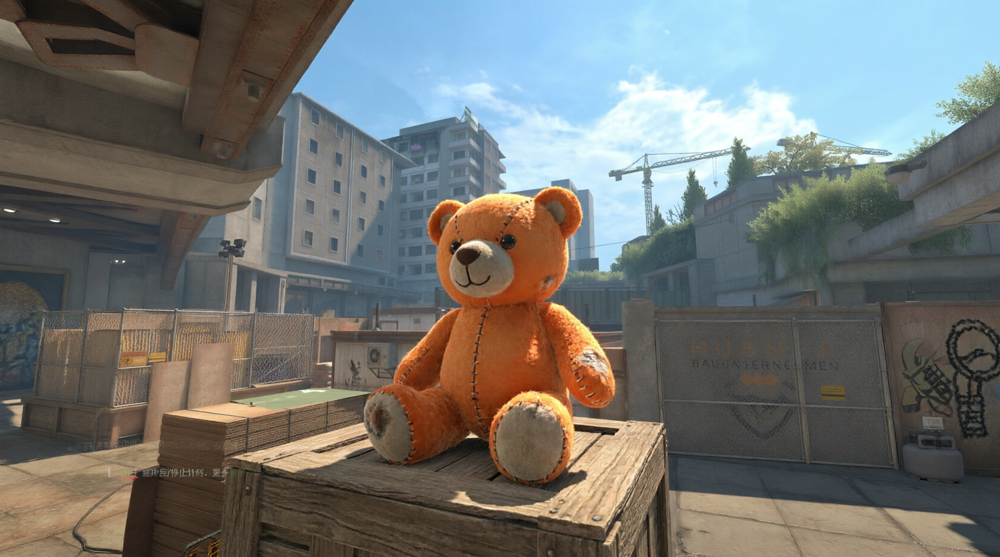
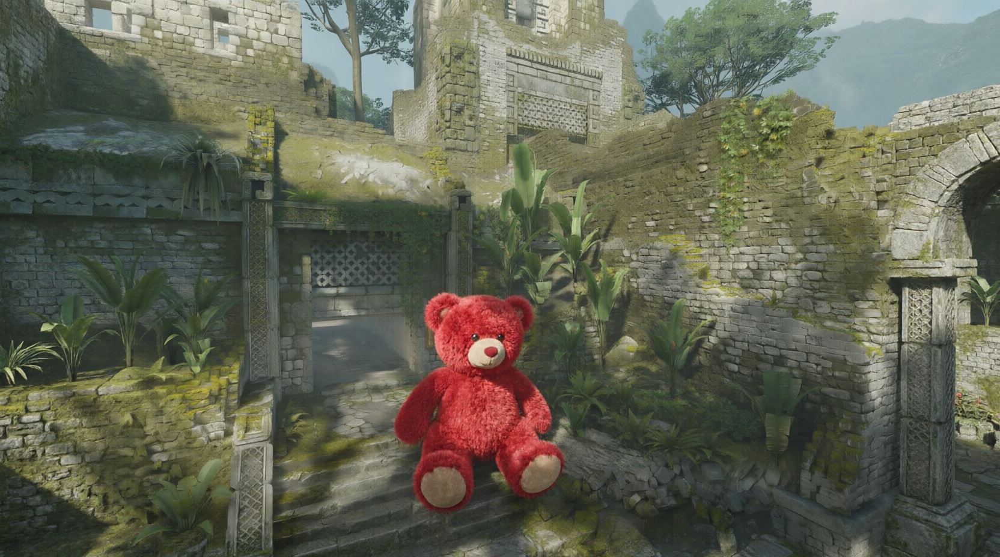
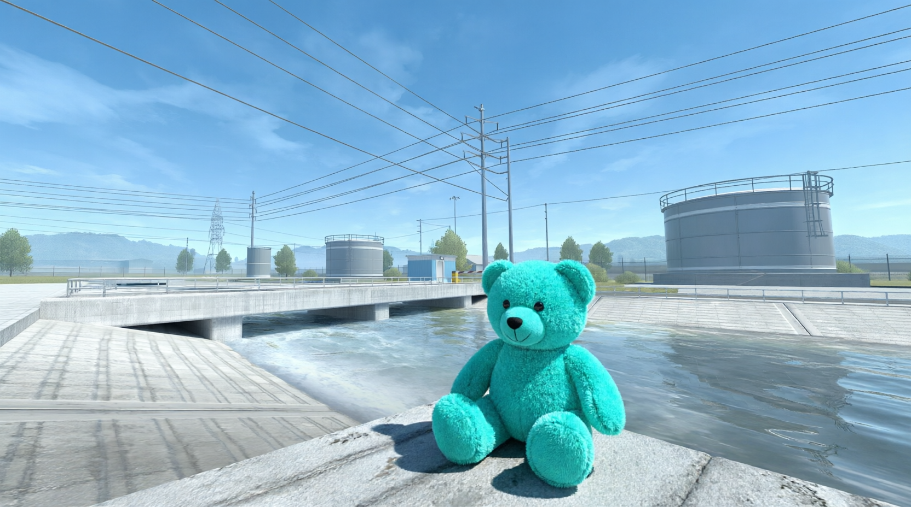
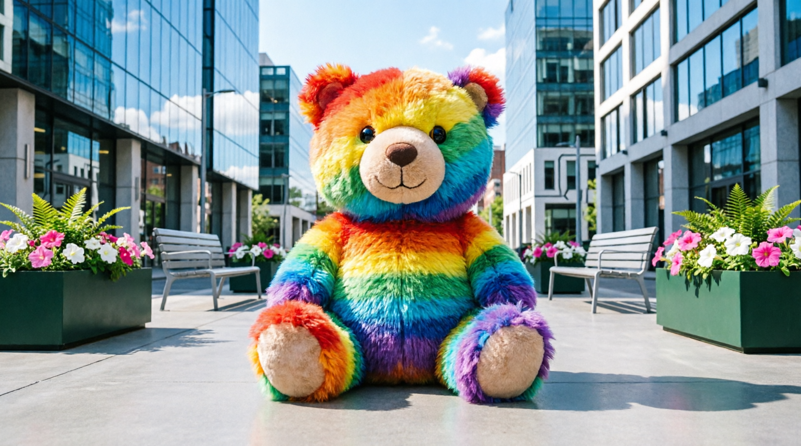

Echo-Memory
A Controlled Study of Memory in Action World Models
Echo Team @ Joy Future Academy, JD
Core question. When a generated scene must leave and later return, which kind of memory helps an action world model preserve identity, layout, and viewpoint instead of drifting into a plausible but different world?

Paper teaser. Echo-Memory studies how Context, Compression, Spatial, and State-Space memory carry historical observations across chunk-wise action-world generation and revisit trajectories.
Echo-Memory is the release code for the paper's controlled memory study. It keeps the shared Wan video backbone, memory modules, training recipes, data utilities, open-domain revisit assets, and public replay/static evaluation suites.
Memory Context List
| Family | Memory row | What it tests |
|---|---|---|
| Floor | No memory / I2V floor | Re-generate from the first frame only; a lower bound for revisit consistency. |
| Raw context | Context K=1 / K=5 / K=20 | Whether simply keeping more recent frames is enough to prevent long-horizon drift. |
| Compression | Compression r = 4 | Whether a compact temporal representation can retain useful history without raw-frame growth. |
| Spatial | Spatial Memory | Whether explicit spatial read/write state improves scene-layout recall. |
| State-space | Legacy Hybrid / Block-wise SSM | Whether recurrent state updates can stabilize revisits beyond short context windows. |

Memory design matrix. The paper groups concrete variants by what is stored and how it is read back: raw context, compressed history, spatial state, or recurrent state-space memory.
Open-Domain Revisit Sources
Source 1 |
 Source 2 |
Source 3 |
 Source 4 |
 Source 5 |
Source 6 |
 Source 7 |
Source 8 |
Replay Video List
Representative replay videos are shown as compressed previews. These clips replay ground-truth trajectories with each memory mechanism.
Context K=1 |
Context K=5 |
Compression r = 4 |
Spatial Memory |
Legacy Hybrid |
Block-wise SSM |
Citation
If you use this repository or the Echo-Memory report, please cite:
@article{king2026echomemory,
title={Echo-Memory: A Controlled Study of Memory in Action World Models},
author={King, Wayne and Xue, Zeyue and Bian, Yuxuan and Huang, Jie and Li, Haoran and Li, Yaowei and Su, Yaofeng and Li, Yuming and Wang, Haoyu and Zhang, Shiyi and Zhang, Songchun and Niu, Yuwei and Xu, Sihan and Zhuang, Junhao and Huang, Haoyang and Duan, Nan},
journal={Echo-Memory technical report},
year={2026}
}